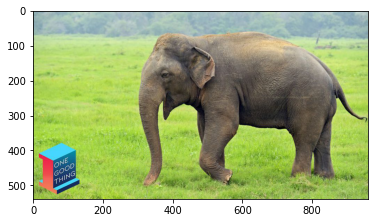

Using TensorRT for accelerated deep learning inference
Accelerating inference of TensorFlow models using TensorRT.
tf.keras
tensorrt
tensorflow
Published
July 1, 2020
If you see the way deep learning research has progressed over the years, it has always been guided by the need of the hour. If I were to develop a chronology out of it, it would be something like - train better model -> train them faster -> get them good at generalizing well, and so on. With a stern increase in the demand for using deep learning more as just another technology stack, there could not have been a better time to think about how do we make our models infer faster. In this post, we are going to see how to use TensorRT to perform accelerated inference with TensorFlow (2) models. After all, making predictions with deep learning models is what makes you real 💰 and we would want to make sure that our bucks burned judiciously.
Downloading data from https://storage.googleapis.com/tensorflow/keras-applications/mobilenet_v2/mobilenet_v2_weights_tf_dim_ordering_tf_kernels_1.0_224.h5
14540800/14536120 [==============================] - 0s 0us/step
WARNING:tensorflow:From /usr/local/lib/python3.6/dist-packages/tensorflow/python/ops/resource_variable_ops.py:1817: calling BaseResourceVariable.__init__ (from tensorflow.python.ops.resource_variable_ops) with constraint is deprecated and will be removed in a future version.
Instructions for updating:
If using Keras pass *_constraint arguments to layers.
INFO:tensorflow:Assets written to: mobilenet_v2/assets
Here, mobilenet_v2 is a directory and when you pass a directory to the save function, it serializes the model in the TensorFlow SavedModel format. This format makes it easier for us to be able to use it on different platforms - be it on GCP’s AI Platform, be it on TensorFlow JS, be it on TensorFlow Serving, and so on.
Now, there are some basic preprocessing steps to be followed before we can actually feed an image to this model -
# Prepare the image for predictionimg = tf.keras.preprocessing.image.load_img('elephant.jpg', target_size=(224, 224))x = tf.keras.preprocessing.image.img_to_array(img)x = np.expand_dims(x, axis=0)x = tf.keras.applications.mobilenet_v2.preprocess_input(x)
Here’s how elephant.jpg looks like in case if anyone’s curious -

Now, running the prediction and decoding it is just a matter of two lines of code -
# Run inferencepreds = mobilenet_v2.predict(x)print('Predicted:', tf.keras.applications.mobilenet_v2.decode_predictions(preds, top=3)[0])
Downloading data from https://storage.googleapis.com/download.tensorflow.org/data/imagenet_class_index.json
40960/35363 [==================================] - 0s 0us/step
Predicted: [('n02504013', 'Indian_elephant', 0.70024925), ('n01871265', 'tusker', 0.2549572), ('n02504458', 'African_elephant', 0.0033761878)]
To find out how much time does this model take to predict a given image? Let’s write a short utility function to handle that -
Can we further optimize this? We will start the next section with this question.
Optimizing the pre-trained image classification model
Note that explaining the different means of optimizing a deep learning model is out of the scop for this post. If you are interested, the following posts are great starting points -
Let’s now introduce the big elephant in the room - TensorRT. TensorRT is an SDK by NVIDIA for performing accelerated deep learning inference. It utilizes Tensor Cores of an NVIDIA GPU (for example V100, P4, etc.) and performs a number of model optimization steps for including parameter quantization, constant folding, model pruning, layer fusion, etc. You can know more about this SDK from here.
Note that TensorRT will only be able to achieve acceleration when it’s used on supported hardware. For more on this, check out the aforementioned link.
Optimizing the MobileNetV2 model is a three-step process -
We use the precision_mode argument to specify the numerical precision of the model parameters we would want. In this case it is FP16 (float16). is_dynamic_op argument is set to True so that the shapes would be determined during runtime. Onto the next step.
(`trt` is aliased as `from tensorflow.python.compiler.tensorrt import trt_convert as trt`.)
Performing the model conversion for optimization -
As the headline suggests, in this step we actually perform the conversion with the configurations we specified in the previous step to optimize our model. python converter = trt.TrtGraphConverterV2( input_saved_model_dir='mobilenet_v2', conversion_params=params) converter.convert() For the conversion to take place, we are supplying the pre-trained MobileNetV2 model in the SavedModel format. It’s really nice to see how this format comes to unify different platforms.
Serializing the optimized model -
Serializing this optimized model is similar to how we did it for the pre-trained model - python saved_model_dir_trt = 'mobilenet_v2.trt' converter.save(saved_model_dir_trt)
Now, how good is this new variant of the model? How accurate will it be? How much faster will it be? We will find those out in a moment. Before that let’s see how to run inference with this optimized model in the next section.
Important
The above code snippet won’t work in Colab or with any TensorFlow version that doesn’t ship a correctly compiled TensorRT (discussion). Therefore, it’s recommended to use an NVIDIA Docker container for this purpose. This resource can be useful in this regard.
Running inference with the optimized model
TensorFlow 2.x provides a convenient function tf.saved_model.load to load the models saved in SavedModel. We are only interested in performing inference with the model so we will load the respective signature from the model as a concrete function -
# Load the particular signature from the TRT graphroot = tf.saved_model.load(saved_model_dir_trt)concrete_func = root.signatures['serving_default']
You can inspect the structure of this function by running concrete_func.structured_outputs and the output would be -
As we would expect, this function will yield a 1000-d vector which is nothing but probabilities distributed across the 1000 different classes of the ImageNet dataset. Also note the key of the above dictionary, it might not be ‘Logits’ always.
Now, to be able to run the inference and decode them in a human-interpretable way, we first need to get the ImageNet dataset labels -
# Gather the ImageNet labels first and prepare themlabels_path = tf.keras.utils.get_file('ImageNetLabels.txt', 'https://storage.googleapis.com/download.tensorflow.org/data/ImageNetLabels.txt')imagenet_labels = np.array(open(labels_path).read().splitlines())
Now, to time the performance of our optimized model, we will need to make little adjustments to the utility function we previously wrote. This is mainly because now, we will now be using a concrete function which takes a tf.constant.
That’s quite a bit of improvement, isn’t it? Note that you may observe slower inference in your first call to time_trt_model(). It may happen because of the additional time a GPU takes to set itself up. When running comparisons like this, it’s a good practice to first warm up the base hardware by running a few test iterations on it and then run the actual iterations for comparison. Depending on the GPU you’re using, these numbers can vary (these experiments were performed a Tesla P100).
Talking about the memory footprints of both the models, for the pre-trained model we have -
Woah! The size has increased in this case! This is because the computational graph of our optimized model has been changed. However, the size of the parameters (mobilenet_v2/variables and mobilenet_v2.trt/variables) of both models is the same.
In real-life situations, as a machine learning practitioner, you will often have to make trade-offs between memory footprints, performance both in terms of accuracy and inference time. So having the knowledge of employing the right tools at the right moment will help you a long way. So, if you are looking for reducing the memory footprint of the model as well as accelerating the inference time, TensorFlow Lite is a good choice. In the bonus section of the post, we are going to discuss it.
This section is for you to pick up. It will be a nice weekend project to train a simple model on a custom dataset and compare the performances as we saw in this post. Additionally, it will be interesting to compare different evaluation metrics like accuracy, precision, and recall for the different models (a custom trained mode, its optimized variants). We barely scratched the surface of TensorRT in this post. You are encouraged to experiment with the different arguments that come with the functions we saw in the post and figure out what works the best for your use-case. If your use-case involves embedded devices and mobile phones then TensorFlow Lite will be another great framework for you to explore.